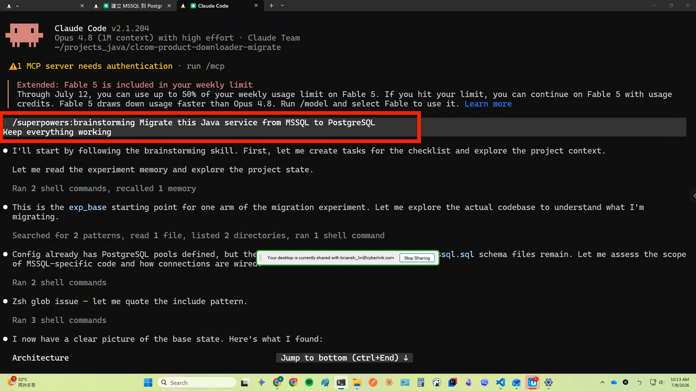
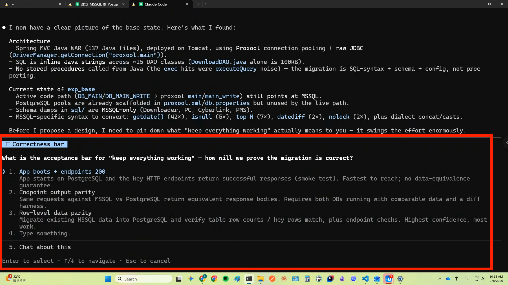
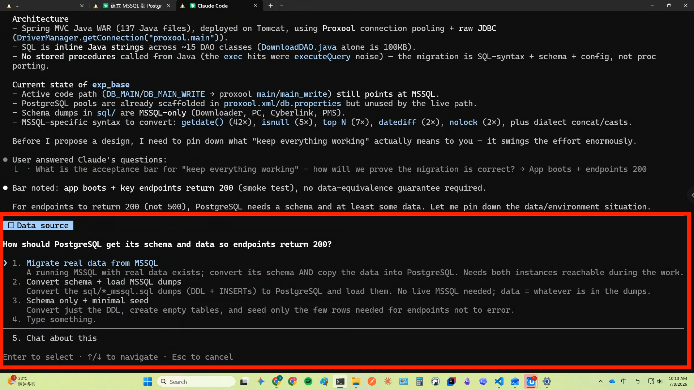
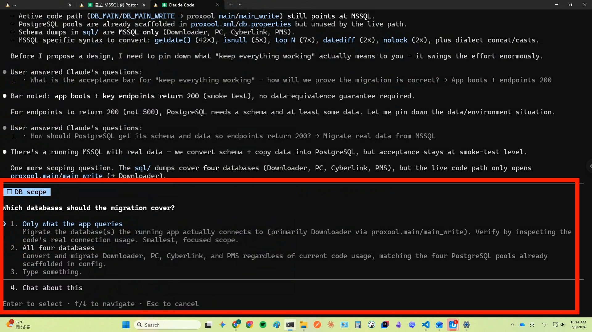

A Practical RD Workflow
BrianSH Lin
RD-CL.com
Today is all about the harness — because it is what earns you the autopilot that comes next
Define it that well and the agent can run it on its own — that's the autopilot
/rewind back out · /btw look up without growing context · subagent type an instruction to spin one up
## Done: data layer ported, 30/48 modules migrated
## Next: finish the remaining 18 modules, run the verifier
## Decisions: all-lowercase identifiers; work in worktree
At the end, just say "keep the rules worth remembering" and it tidies them up Keep it short — only what's worth keeping
Looks reasonable It is a trap
It rewrites the SQL, swaps the driver, the build goes green — and it confidently says "done."
Three things are missing — and they're the whole game:
Five steps, one gate at the end
Refuses to write code until the design is approved That gate is the point




Once the spec is defined,
/goal and /workflow take it and run
Define it well enough to run on its own
⇒ autopilot
If you can't verify it, don't ship it
A live downloader backend — dispatches software builds to users and logs each download:
In production every day, on MSSQL → PostgreSQL.
Every API must return the correct answer on PostgreSQL.
Dispatch the wrong build → a real user downloads the wrong file.
~390k rows · 23 tables · 48 stored procedures · 4 databases
The hard part isn't "does it run" It's "are the answers still correct" — so we replay every API on both databases and compare
A vs rest = method beats one-liner · B vs C = full vs lean · C1 vs C2 = /goal vs /workflow · D = reality check
Without a machine-checkable verifier, "loop until goal" means nothing — shared by B / C1 / C2.
| run | correctness | cost | time (continuous) | code quality /5 |
|---|---|---|---|---|
| A · naive | 47/47 claimed ⚠ self-asserted 0 assertions · no artifact |
≈26.7M units self-reported |
≈104 min self-reported |
2.0 robust 3.5 · tests 1 struct 2.5 · review 1 |
| B · full superpowers | 41/47 HTTP 2xx + 326/326 row counts ✓ |
≈21.3M units telemetry ⚠ report claims 44.6M |
≈5.0 h | 3.1 — best robust 4.5 · tests 2.5 struct 3.5 · review 2 |
| C1 · /goal | 47/47 HTTP 2xx no row diff |
≈30.0M units | ≈97 min — fastest | 2.25 output SQL never committed |
| C2 · /workflow | 40/40 HTTP 2xx iter 34→40 · 7 excluded N/A |
≈5.5M units cheapest — ~¼ of the rest |
≈132 min | 2.5 MSSQL left in legacy Java |
| D · the real migration | shipped to prod 1 incident found by traffic |
NOT FOUND | ~1 month calendar elapsed |
2.9 — 2nd robust 4 · tests 1.5 struct 4 · review 2 |
Re-brief the task in five fields
1–3 write the spec · 4 is isolation · 5 is the verifier — the filled-in brief is your prompt
One reproducible workflow — use it tomorrow:
Stop being the executor
defines the task and makes the code legible
⇒ Lets it run on its own
Build the harness well today
Everything today was about earning the right to run on autopilot